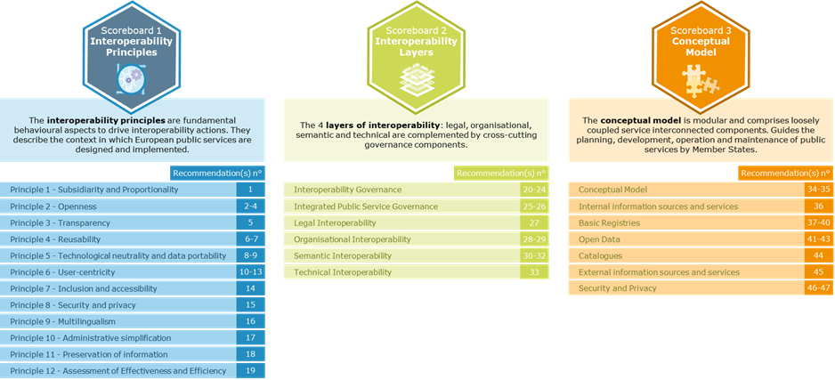
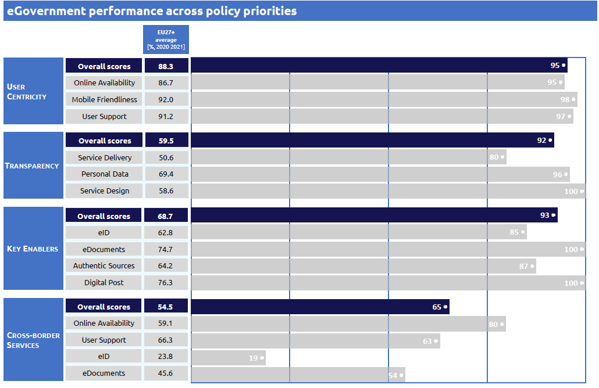
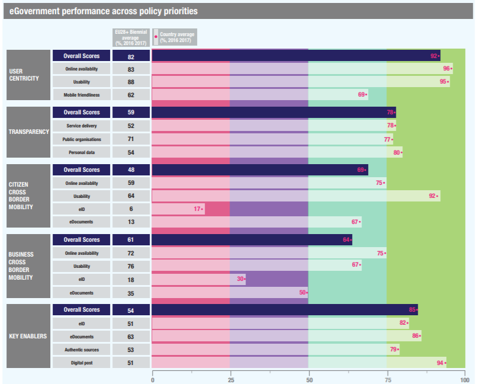
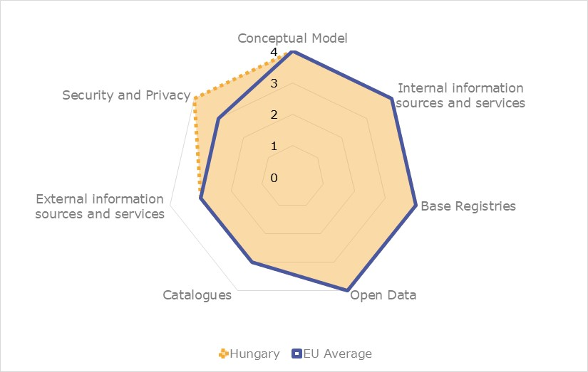

Digital Public Administration factsheet 2021
Iceland
Digital Public Administration factsheet 2022
Table of Contents
2 Digital Public Administration Highlights 10
3 Digital Public Administration Political Communications 12
4 Digital Public Administration Legislation 20
5 Digital Public Administration Governance 25
6 Digital Public Administration Infrastructure 28
7 Cross-border Digital Public Administration Services 34
Country
Profile
1
Country Profile
Digital Public Administration Indicators
The following graphs show the latest Generic Information Society Indicators for Iceland compared to the EU average. Statistical indicators in this section reflect those of Eurostat when this report was prepared.
Percentage of individuals using the internet to interact with public authorities in Iceland | Percentage of individuals using the internet to obtain information from public authorities in Iceland |
Percentage of individuals using the internet to download official forms from public authorities in Iceland | Percentage of individuals using the internet to submit completed forms to public authorities in Iceland |
Interoperability State of Play
In 2017, the European Commission published the European Interoperability Framework (EIF) to give specific guidance on how to set up interoperable digital public services through a set of 47 recommendations. The figure below represents the three pillars of the EIF around which the EIF Monitoring Mechanism was built to evaluate the level of implementation of the EIF within the Member States. It is based on a set of 71 Key Performance Indicators (KPIs) clustered within the three main pillars of the EIF (Principles, Layers and Conceptual model), outlined below.

Source: European Interoperability Framework Monitoring Mechanism 2021
Source: European Interoperability Framework Monitoring Mechanism 2021
Source: European Interoperability Framework Monitoring Mechanism 2021
Source: European Interoperability Framework Monitoring Mechanism 2021
eGovernment State of Play
The study evaluates online public services on four dimensions:
- User centricity: indicates the extent to which a service is provided online, its mobile friendliness and its usability (in terms of available online support and feedback mechanisms).
- Transparency: indicates the extent to which governments are transparent about (i) the process of service delivery, (ii) policy making and digital service design processes and (iii) the personal data processed in public services.
- Cross-border services: indicates the extent to which users of public services from another European country can use the online services.
- Key enablers: indicates the extent to which technical and organizational pre-conditions for eGovernment service provision are in place, such as electronic identification and authentic sources.
The 2022 report presents the biennial results, achieved over the past two years of measurement of all nine life events used to measure the above-mentioned key dimensions. More specifically, these life events are divided between seven ‘Citizen life events’ (Starting a small claim procedure, Moving, Owning a car, Health measured in 2021, and Career, Studying, Family life, measured in 2020) and two ‘Business life events’ (Regular Business Operations, measured in 2021, and Business start-up, measured in 2020).

Source: eGovernment Benchmark Report 2022 Country Factsheets

Digital Public Administration Highlights
2
Digital Public Administration Highlights
 | Digital Public Administration Political Communications |
The new policy on sustainable public procurement was published in April 2021. A three-year action plan for the years 2021—2024 emphasizes sustainability, the use of digital procurement, systems, innovation, data and accessibility for SMEs. The action plan status is trackable online. All invoices sent to government entities are fully electric xml versions as of 2020 to better enable approval processes and data analysis.
| Digital Public Administration Legislation |

| Digital Public Administration Governance |

The Joint Committee of Digital Transformation in the Public Sector was established early in 2022 with members from central government and the Association of Local Authorities. The purpose of the committee is to harmonise the digital efforts based on the digital strategy and the state's strategic plan for municipal affairs.
| Digital Public Administration Infrastructure |

A significant investment was made as part of COVID-19 response in digital infrastructure and Ísland.is portal. For example driving licenses were made available in digital form in phone wallets, criminal record checks were digitised, API web design guide and central web services data catalogue was launched, revamped Ísland.is portal with life events was launched, open source design system went live to facilitate quick unified launch of digital applications and processes, most COVID-19 aid application processes were fully digital at launch in 2020 and the first connections to government data through the secure X-road data exchange layer were implemented.
Digital Public Administration Political Communications
3
Digital Public Administration Political Communications
Specific Political Communications on Digital Public Administration
Cloud Computing Strategy 2021
The purpose of the public cloud policy is to achieve harmonised goals in the use of cloud solutions and their implementation. Cloud solutions are already in use by many public bodies, making it urgent to co-ordinate these projects for efficiency and increased security purposes.
The emphasis on digital services and user-centric service design has increased the demand on institutions for speed and efficient service. Cloud solutions that shorten the delivery time of infrastructure and IT services contribute to the quick, effective and secure provision of digital services.
Cloud service also opens new opportunities, e.g., in the field of artificial intelligence, and for deeper data analysis, which would otherwise be difficult or impossible to exploit. A Dynamic Purchasing System (DPS) was introduced by the Central Public Procurement Agency in the first quarter of 2022 to support purchasing of cloud services.
Government Data Security Classification
Data Security Classification is a prerequisite for more secure storage, handling and mediation of public sector data. It is also an important step in harmonising and amplifying more effective use and exchange of data between public bodies, the private sector and citizens. The classification is currently in the consultation process and will be published in 2022. The classification scheme directly and indirectly impacts the use of cloud services in the public sector.
Digital Strategy
An implementation plan is already in place and includes actions on the four pillars of the strategy.
National Cybersecurity Strategy 2022-2037
A new national Cyber Security Strategy, covering the period 2022 to 2037, was published in February 2022. The strategy pursues two goals:
- Excellent skills and deployment of cyber security technology: knowledge and skills will be strengthened by increasing public education, training, research, development, and international cooperation. Using the best available technology and solutions will improve the ability to prevent, respond and minimise the damage of cyberattacks.
- Safe online environment: strong online law enforcement and a legal environment in line with international standards will provide a basis to respond to unacceptable behaviour online. Emphasis will be placed on protection for children online. Security planning, risk analysis and resilience of critical infrastructure will be strengthened and the ability to respond to security threats and defence increased.
The strategy will be accompanied by an action plan, which will be released during the first half of 2022. The Ministry of Higher Education, Science and Innovation is responsible, working with relevant ministries and other stakeholders, for identifying specific initiatives to achieve the strategy objectives. The same ministry will also be responsible for monitoring and reporting on the overall progress of implementing the actions of the action plan.
Government Action Plan
- The government is committed to making Iceland one of the leading nations in the world in the field of digital services. The goal is to simplify public governance, improve (digital) public services, increase transparency and access to information through the use of digital solutions.
- Co-ordinated efforts will be continued on improving the processing, storage, mediation, use and re-use of public data, as well as promoting easier access to data.
- Emphasis will be placed on Digital Iceland’s core digital products, available to public entities and via the government portal Island.is to citizens and the private sector.
- The government intends to use innovation increasingly to solve public sector challenges. Premises will be created to enable public bodies to work with start-ups in designing and developing solutions that can solve the sector’s challenges better and more cost-effectively.
The government’s medium-term fiscal plan for 2022-2027 describes individual actions in more detail. These actions are intertwined with the strategies and policies already mentioned in this chapter.
A revamped portal for public services, Island.is, was launched in 2020, to provide a central point of access to all digital public services.
The number of visits to the site has increased steadily since then, and by December 2021 the number of visits corresponded to 65% of the population visiting it every month. The availability of public services through the portal has also increased significantly since it was launched.
Digital North
Interoperability
Unique Office IT Supplier for the Entire Public Sector
The introduction of Microsoft 365 aims to consolidate all services into a single license, while guaranteeing increased communication and collaboration between institutions.
Core Services of Island.is
Straumurinn (x-Road) is a data transfer layer designed to facilitate communication between information systems securely. It is currently used by 34 legal entities, with information input from 10 parties. The system will promote the automation of services by facilitating the automation process.
Island.is login service offers secure access to self-service digital solutions of public entities. A new login service was launched in 2021. It includes a system enabling authorised agents to log in on behalf of companies, as well as individuals acting on behalf of family members or representatives of persons with disabilities. The agency system ensures the traceability of the person who logs in on behalf of another and thus ensures the security of the client granting the agent authorisation.
Island.is mailbox is a communication solution that enables public authorities to send material securely to individuals and legal entities. The Act on a Digital Mailbox sets out the government's goal of enabling individuals and companies to access all principal public sector data through the mailbox by 2025. At year-end 2021, 32 public entities were using a digital mailbox to share data, and in 2021 around 8 million documents were made available.
Island.is application system is a tool available to public entities to build user-friendly digital applications for the public service they provide. The application system enables institutions to use digital technology to reduce costs while greatly improving services for users.
Island.is institutional pages give public entities the opportunity to move their websites under the technical framework of Island.is with the associated gains in efficacy and cost-efficiency. This arrangement encourages public entities to focus on their core tasks and services to the public by utilising the technical framework, design system and content policy of Island.is for their websites.
Island.is My pages was redesigned in 2021 with users' needs and accessibility issues in mind. The solution provides public entities with the possibility to link the data currently provided on their My pages to Island.is, which can reduce the number of similar public sector pages. This increases cost-efficiency and gives users access to more data at fewer locations, improving user experience.
Key Enablers
Access to Public Information
Laws on the re-use of public sector information
eID and Trust Services
NOBID
Electronic identification
Interconnection of base registries
X-Road
eProcurement
Public Procurement – Policy and Action Plan
The new policy on sustainable public procurement was published in April 2021. A three-year action plan for the years 2021—2024 emphasises sustainability, the use of digital procurement, systems, innovation, data and accessibility for SMEs. The action plan status may be tracked online. All invoices sent to government entities are fully electronic xml versions as of 2020 to better enable approval processes and data analysis.
Domain-specific Political Communications
No political communication was adopted in this field to date.
Emerging Technologies
Artificial Intelligence (AI)
Status Report on AI
- Citizens have high trust in public bodies and businesses operating in public services;
- Public bodies and businesses are technically advanced and use IT extensively;
- The public sector possesses technological infrastructure and has been collecting data for several decades;
- Institutions have based their activities on IT and access to knowledge; and
- Good cooperation between employers’ associations, labour unions and the government facilitates the reorganisation of the labour market, adapting it to the changes that digital transformation affects.
- The development of artificial intelligence should respect the society’s moral values as well as human rights and democracy.
- The development and use of artificial intelligence should guarantee the integrity and fairness of communication and decision-making processes.
- Artificial intelligence research, development and use should promote and ensure responsible and trusted solutions. The inspectors should assure that artificial intelligence is operated in accordance with the principles of responsibility and trustworthiness.
- Security should be guaranteed in all development, operation and control of systems that use artificial intelligence.
Declaration on AI in the Nordic-Baltic Region
- Improving opportunities for skills development with the goal of enabling more authorities, companies and organisations to use AI;
- Enhancing access to data for AI to be used for better service to citizens and businesses in the region;
- Developing ethical and transparent guidelines, standards, principles and values to guide when and how AI applications should be used;
- ensuring that infrastructure, hardware, software and data, all of which are central to the use of AI, are based on standards, enabling interoperability, privacy, security, trust, good usability and portability;
- Ensuring that AI gets a prominent place in the European discussion and implementation of initiatives within the framework of the Digital Single Market;
- Avoiding unnecessary regulation in the area, which is under rapid development;
- Utilising the structure of the Nordic Council of Ministers to facilitate the collaboration in relevant policy areas.
Distributed ledger technologies
No political communication was adopted in this field to date.
Big data
No political communication was adopted in this field to date.
Cloud computing
Public Procurement – Policy and Action Plan
The new policy on sustainable public procurement was published in April 2021. This consists in a three-year action plan for the years 2021—2024 and puts emphasis on sustainability, the use of digital procurement, systems, innovation, data and accessibility for SMEs.
Internet of Things (IoT)
No political communication was adopted in this field to date.
High-performance computing
No political communication was adopted in this field to date.
High-speed broadband connectivity
Letter of Intent on the Development of 5G in the Nordic Region
Other
Participation in the DIGITAL Europe Programme

Digital Public Administration Legislation
4
Digital Public Administration Legislation
Specific Legislation on Digital Public Administration
Digital Mailbox Act
In June 2021, Act on a Digital Mailbox in a Central Government Service Portal was formally adopted by the Icelandic parliament Althingi. The purpose of the Act is to promote efficient public service, increase transparency in dealing with issues and improve efficiency in public administration. At the same time, it aims at centralising in a single location and digitalising the government’s main means of communication with individuals and legal entities.
In accordance with the provisions of the Act, an official plan for the implementation of the digital mailbox by all public bodies by the end of 2024 has been published.
The Digital Mailbox Act is a very important step to ensure that public entities have the adequate legal authority to communicate digitally with individuals and legal entities, so that the publication of documents through the portal has the same legal effect as other means of communication.
National ccTLD Act
In May 2021, new legislation was approved by the Congress on the country code top-level domain (ccTLD).IS. This is the first legislation on the Icelandic top level domain, intended primarily to ensure secure, effective and economic access to the Icelandic top level domain .IS, and to lay down rules for the operation of the registry and registrants of the national domain.
Information Act
The Information Act was adopted by the Althingi at the end of 2012 and came into force on 1 January 2013. Its objective is to guarantee transparency in government administration and in the handling of public interests with the purpose, inter alia, of strengthening the following aspects:
- The right to information and freedom of expression;
- Public participation in a democratic society;
- Checks and balances provided by the media and the public on government authorities;
- Media communication on public affairs; and
- Public trust in government administration.
This act applies to all government activities and private entities In which the State holds a majority share.
Administrative Procedures Act
On 10 March 2003, the Administrative Procedures Act (No. 37/1993) was amended by adding a special chapter on electronic activities performed by the Public Administration. The amendment removed general obstacles to the development of electronic administration. In drafting the amendment, the responsible committee was guided by the concept of equivalent value, and also emphasised the need to maintain technical neutrality. The changes included permission – but no obligation - for the electronic handling of governmental administration cases.
Interoperability
No legislation was adopted in this field to date.
Key Enablers
Access to Public Information
Use and Reuse of Public Sector Information
Conditions for the reuse of public sector information are partly covered by the Information Act. The act defines public access to information and the restrictions on the right to information. Transposing the European Directive on the reuse of public sector information (PSI Directive, 2003/98/EC), the act includes almost all items covered there, with the exception of access and reuse of information through electronic means such as databases.
The Act on Reuse of Public Information entered into force on 26 May 2018. Its main objective is to ensure harmonised minimum rules on the permitted reuse of the information to which the public has a right of access and to increase the reuse of public information for the benefit of society as a whole. The act applies to the State, municipalities, their institutions and other public bodies, as well as their dealings with the public. The act states that a public body is obliged to comply with a request for permission to reuse existing information in the custody of a public body to which the public has a right of access on the basis of the Information Act or other laws.
The EU has introduced the Open Data Directive, EU 2019/1024, on open data and the reuse of public information, which Iceland intends to transpose as other Member States have, once it has been adopted into the EEA Agreement.
Free Flow of Non-Personal Data
EU Directive 2018/1807 on free flow of non-personal data has not yet been adopted by the EEA Agreement; however, Iceland intends to introduce a law to transpose the Directive once adapted into the Agreement.
eID and Trust Services
Transposition of the eIDAS Regulation
Regulation 2014/910/EU on electronic identification and trust services for electronic transactions (eIDAS Regulation) is a European legal act setting the rules for secure and seamless use of electronic identification and electronic transactions in the European Single Market. The eIDAS Regulation has been transposed into Icelandic law with the Act on Electronic Identification and Trust Services for Electronic Transactions (No. 55/2019) and associated regulations (No. 100/2020 and No. 310/2020).
Supporting legislation can be found in the 2022 Electronic Commerce Act, the Administrative Procedures Act, as amended in 2003, and the Public Procurement Act, as amended in 2019.
Security aspects
Data Protection Act
The Act on Data Protection and the Processing of Personal Data (No. 90/2018) transposed into national law the General Data Protection Regulation (2016/679/EU). The Act is enforced by the Data Protection Authority, which is responsible for the supervision of all processing operations covered by the Act on Data Protection and the Processing of Personal Data.
NIS Directive
In June 2019, the Icelandic Parliament adopted Act No. 78/2019, on Cyber Security, based on the NIS model. The Act, which redefined Iceland’s cyber security strategy, was passed in 2015 and entered into force on 1 September 2020. The Act also defined the legal framework within which the Cyber Security Council shall act to implement the new strategy and action plan.
Interconnection of base registries
No legislation was adopted in this field to date.
eProcurement
Public Procurement Act
The Public Procurement Act (No. 120/2016) and subsequent regulations replaced an older act (No. 84/2007) and transposed three EU Directives (2014/25/EU, 2014/24/EU and 2014/23/EU). All relevant provisions for eProcurement have been implemented, such as eNotice, eAccess, eSubmission, eEvaluation and eAward. A provision for trusted electronic signatures was added to the Act in 2019, as well as a provision for eInvoice acceptance by all government agencies based on the new standard EN 16931.
Domain-specific Legislation
Act on Electronic Commerce and Other Electronic Services
The Act on Electronic Commerce and Other Electronic Services (No. 30/2002) states that electronic contracts are equivalent to written contracts and that electronic services provided by a service provider established in Iceland shall conform to Icelandic law on the establishment and operation of the service. The Act does not apply to electronic services relating to taxation. However, in this field there are two main acts applying to electronic commerce: the Income Tax Act (No. 90/2003) and the Value Added Tax Act (No. 50/1988). Under the former, a legal entity is taxable in Iceland if it is domiciled in the country. The latter introduced several special provisions concerning imports.
eInvoicing
In January 2019, the national Regulation 44/2019 stipulated that all public entities were to accept eInvoices according to the standard EN 16931 for contracts covered by the Act on Public Procurement. Furthermore, the Ministry of Finance and Economic Affairs has declared that since 1 January 2020 governmental agencies only accept elnvoices. As of April 2020, the government also issues all invoices as eInvoices.
Emerging Technologies
Artificial Intelligence (AI)
No legislation was adopted in this field to date.
Distributed ledger technologies
No legislation was adopted in this field to date.
Big data
No legislation was adopted in this field to date.
Cloud computing
Government Data Security Classification
Data Security Classification is a prerequisite for more secure storage, handling and mediation of public sector data. It is also an important step in harmonising and amplifying more effective use and exchange of data between public bodies, the private sector and citizens. The classification is currently in the consultation process and will be published in 2022. The classification scheme directly and indirectly impacts the use of cloud services in the public sector.
Internet of Things (IoT)
No legislation was adopted in this field to date.
High-performance computing
- No legislation was adopted in this field to date.
High-speed broadband connectivity
No legislation was adopted in this field to date.

Digital Public Administration Governance
5
Digital Public Administration Governance
National
Ministry of Finance and Economic Affairs
The Ministry of Finance and Economic Affairs is responsible for strategy and policymaking for digital transformation and ICT. There is extensive collaboration and consultation between the ministry and other governmental bodies and actors.
Ministry of Higher Education, Science and Innovation
As of 2022, The Ministry of Higher Education, Science and Innovation covers all sectors of ordinary business and economic activity. The ministry’s main goal is to pave the way for a vigorous and forward-looking economy. The ministry is responsible for telecommunications, digital communication and internet security, as well as all electronic business relations and therefore also for eIDAS incorporation. Cyber security is also part of the ministry’s mandate.
Pursuant to Chapter VI of Regulation (EU) 2016/679, the Data Protection Authority (DPA) is a supervisory body which oversees the implementation of the Regulation, of Act No. 90/2018, and of special legal provisions concerning the processing of personal data and other related rules.
The Data Protection Authority is an independent body managed by a special board. The Data Protection Commissioner is responsible for and oversees the authority’s daily activities, financial matters and operations, as well as personnel recruitment.
Cybersecurity Council
The Cybersecurity Council was established in 2015 and plays a key role in implementing the cyber security strategy and its action plan. It is composed of representatives from ministries and authorities having a key role in cyber-related issues. It has proven to be a very useful platform for information exchange and coordination, when needed. Furthermore, another body was established, the Cyber Security Forum, to act as a platform for cooperation between the public and private sectors.
Subnational (Federal, Regional and Local)
Association of Local Authorities
The Association aims to defend local interests in dealings with the government and other parties in both national and international matters. It formulates common policies on specific issues and therefore works closely with both the central government and the Althingi. A special cooperation agreement is in force between the association and the government, containing formal provisions on their relations.
Joint Committee of Digital Transformation in the Public Sector
The committee was established early in 2022 with members from central government and the Association of Local Authorities. The purpose of the committee is to harmonise the digital efforts based on the digital strategy and the State's strategic plan for municipal affairs.
Digital Public Administration Infrastructure
6
Digital Public Administration Infrastructure
Portals
National portals
Island.is
The portal also functions as a toolbox, developing tools which can be used by all public bodies. These include centralised authentication, digital document delivery (C2G and B2G), digital document distribution (G2C and G2B) and a digital service layer.
Governmental Portal
Open Data Portal
Subnational portals
No specific portal at subnational level was reported to date.
Networks
FS Net
Trans European Services for Telematics between Administrations
Data Exchange
Straumurinn (X-Road)
eID and Trust Services
Audkenni ehf. – Qualified Trust Provider
eProcurement
TendSign
Financial Management Authority
The Financial Management Authority (FJS) is an independent agency under the Ministry of Finance and Economic Affairs. The FJS has a contract with three authorised e-Invoice service providers and has been authorised to become a PEPPOL Authority (PA).
ePayment
IcePro
Knowledge Management
Tungutaekni Language Technology Website
Web of Science (Vísindavefur)
Digital Competence
There are several joint efforts on improving the digital competence of both employees of the public and private sectors.
The digital competence wheel is a project provided by one of the workers unions. It gives those who participate in the survey a graphical overview of their digital competency. The survey is open to everyone.
- Making AI knowledge accessible to all so that people can find power and opportunity in new technology, rather than seeing it as a threat;
- Empowering the Icelandic nation and increasing its competitiveness; and
- Strengthening the working opportunities and working competences of Icelanders.
Elements of AI is a 30-hour online course divided into six chapters that individuals can take when it is convenient for them, on a computer or on the phone, and it is designed to be accessible to most people, regardless of age, work experience, or other factors.
The course has received several awards (including from the MIT - Massachusetts Institute of Technology) and is named first in the category of online courses on computer science, ahead of well-known academic institutions such as Stanford, Harvard, and the MIT.
Cross-border Platforms
EUCARIS, EULISSTORK
Nordic Ministerial Digital Committee
In conjunction with the Digital North 2.0 declaration and joint work between the Nordic and Baltic countries, there are both formal and informal work processes intended to develop cross-border services. One work stream as a part of the Nordic Ministerial Digital Committee is the Cross-border Digital Services Programme (CBDS), which among other things is responsible for the NOBID project, see chapter 3.3.2.
Base Registries
Current Status
In particular:
- The National Population and Properties Registry is managed by the Ministry of Infrastructure and contains master data related to personal data (natural and legal persons) and property data.
- The Vehicle Registry is managed by the Ministry of Infrastructure and contains master data related to vehicles.
- The Business Registry is managed by the Ministry of Finance and Economic Affairs and contains master data related to business and legal persons.
- The Property Registry is managed by the Ministry of Infrastructure and contains master data related to land and properties.
There are also a number of data sharing agreements:
- The National Population Registry is distributed by means of agents throughout the society and widely used both by public and private entities. Public authorities have access to more information than private entities, in order to fulfil their duties. The entities pay for their use according to an agreement with Registers Iceland.
- The Properties Registry is both accessible online and shared through various entities. The entities pay for the use according to an agreement with Registers Iceland.
Incorporation of the EU Open Data Directive (EU 2018/1807) into the EEA Agreement is under revision by the EFTA states. Should it be incorporated into the agreement, an updated legislation of all countries should support both a common catalogue of the base registries and high value datasets.
Emerging Technologies
Artificial Intelligence (AI)
No infrastructure was reported in this field to date.
Distributed ledger technologies
No infrastructure was reported in this field to date.
Big data
No infrastructure was reported in this field to date.
Cloud computing
No infrastructure was reported in this field to date.
Internet of Things (IoT)
No infrastructure was reported in this field to date.
High-performance computing
No infrastructure was reported in this field to date.
High-speed broadband connectivity
No infrastructure was reported in this field to date.

Cross-border
Digital Public Administration Services
7
Cross-border Digital Public Administration Services
Further to the information on national digital public services provided in the previous chapters, this final chapter presents an overview of the basic cross-border public services provided to citizens and businesses in other European countries. Your Europe is used as reference, as it is the EU one-stop shop which aims to simplify the life of both citizens and businesses by avoiding unnecessary inconvenience and red tape in regard to ‘life and travel’, as well as ‘doing business’ abroad. In order to do so, Your Europe offers information on basic rights under EU law, but also on how these rights are implemented in each individual country (where information has been provided by the national authorities). Free e-mail or telephone contact with EU assistance services, to get more personalised or detailed help and advice is also available.
Life and Travel
For citizens, the following groups of services can be found on the website:
- Travel (e.g. Documents needed for travelling in Europe);
- Work and retirement (e.g. Unemployment and benefits);
- Vehicles (e.g. Registration);
- Residence formalities (e.g. Elections abroad);
- Education and youth (e.g. Researchers);
- Health (e.g. Medical treatment abroad);
- Family (e.g. Couples);
- Consumers (e.g. Shopping).
Doing Business
For businesses, the groups of services on the website concern:
- Running a business (e.g. Developing a business);
- Taxation (e.g. Business tax);
- Selling in the EU (e.g. Public contracts);
- Human Resources (e.g. Employment contracts);
- Product requirements (e.g. Standards);
- Financing and Funding (e.g. Accounting);
- Dealing with Customers (e.g. Data protection).
The Digital Public Administration Factsheets
The factsheets present an overview of the state and progress of Digital Public Administration and Interoperability within European countries.
The factsheets are published on the Joinup platform, which is a joint initiative by the Directorate General for Informatics (DG DIGIT) and the Directorate General for Communications Networks, Content & Technology (DG CONNECT). This factsheet received a valuable contribution from the Ministry of Finance and Economic Affairs and the Ministry of Higher Education, Science and Innovation.
The Digital Public Administration factsheets are prepared for the European Commission by Wavestone.
An action supported by Interoperable Europe
Interoperable Europe will lead the process of achieving these goals and creating a reinforced interoperability policy that will work for everyone. The initiative is supported by the Digital Europe Programme.
Follow us
Interoperable Europe
Source: The Electronic Communications Office of Iceland (ECOI) ↑